Chapter 4 Linear regression in R
In the following example, we will take the bird abundance and mass data and run a linear regression in R. Based on the hypothesis, we will formulate an equation that allows us to run the model and then check the assumptions under which the model can be run. We will also see how to interpret the output of the model and how to represent it graphically.
4.1 Model formulation
The data are composed of the average mass of individuals of a species and the abundance of those species. We are interested in quantifying the relationship between the mass of an individual and the abundance of the species (or the effect of mass on abundance).
We hypothesized that for different bird species, the average mass of an individual has an effect on the maximum abundance of the species, due to ecological constraints (food sources, habitat availability, etc.).
4.1.1 Model equation
In mathematical notation, a linear model takes the form of the equation of a line for which the predicted variable is the maximum abundance “MaxAbund” and the predictor variable is the mass of individuals “Mass”.
\[\textrm{MaxAbund}_i = \beta_0 + \beta_1 \times \textrm{Mass}_i + \epsilon_i \;, \quad \epsilon_i \sim \mathcal{N}(0, \sigma^2)\]
Note that the linear model has three variables: \(\beta_0\) , \(\beta_1\) and \(\sigma^1\). \(\sigma^1\) defines the variance of the data around the model and is a variable of the normal distribution that describes the distribution of the data around the model (on either side of our line).
Model formula in R
In the R programming language, the equation is translated as :
MaxAbund ~ Masswhere the predicted variable is placed on the left of the tilde and the predictor variable is on the right.
4.2 Linear regression in R
Performing a linear regression with R is divided into three steps:
- Formulate and run a linear model based on a hypothesis
- Check the conditions for the linear model
- Examine the output of the model and whether the conditions are met
- Analyze the regression parameters
- Plot the model
- Perform significance tests on the parameter estimates (if necessary)
We will explore each step in the following sections.
Also, in the case where the conditions are not met, we will see that it is possible to consider the use of a Generalized Linear Model (GLM) or the transformation of the data.
4.2.1 Step 1: Formulate and run a linear model
The lm() command is used to fit a linear model where the first argument is the model formula:
# Linear regression of maximum abundance against mass
lm1 <- lm(MaxAbund ~ Mass, data = bird)With this line of code, we define a new lm1 object that contains the linear model. We also specify two arguments to the function. The first MaxAbund ~ Mass is the model formula and the second bird defines the object that contains the variables.
Before using a new function in R, you should refer to its help page (
?functionname) to understand how to use the function and the default parameters.
Let’s look at the parameter estimates:
# Examination of the regression output
lm1##
## Call:
## lm(formula = MaxAbund ~ Mass, data = bird)
##
## Coefficients:
## (Intercept) Mass
## 38.16646 0.01439How do the parameters compare to our predictions? You will notice that the parameter for mass is positive while we predicted a negative relationship (Species characterized by larger individuals have lower maximum abundance).
However, can we trust the estimates? To be sure, we need to check the application conditions!
4.2.2 Step 2: Verify assumptions using diagnostic plots of the residuals
An effective method of verifying that the model’s assumptions are met is to conduct a visual examination. Four diagnostic plots can be produced from an lm object. To do this, we use these commands:
# Plot the four diagnostic plots
par(mfrow = c(2, 2))
plot(lm1)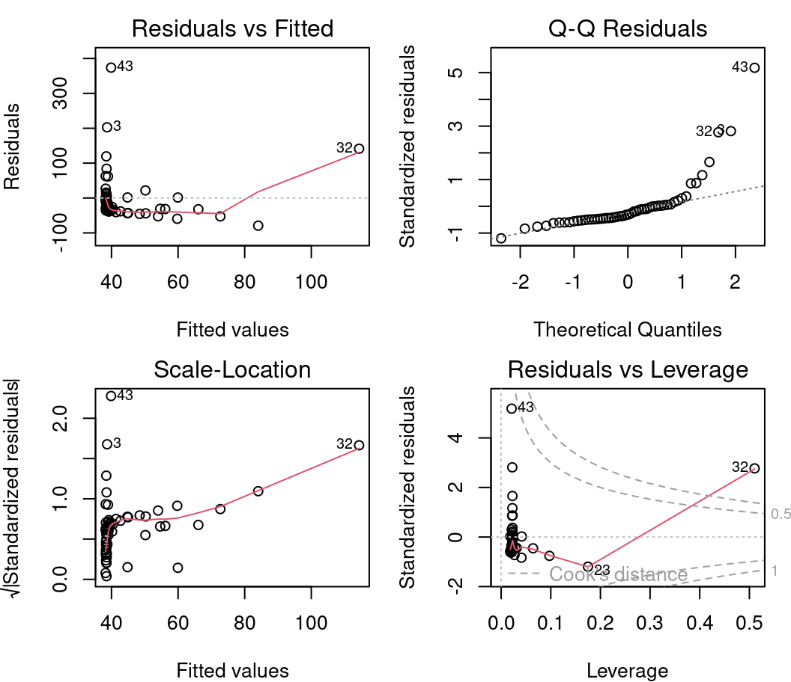
par() is a function that allows you to define the parameters of the graph. Here we specify mfrow=c(2,2) which displays a grid of 2 x 2 graphs at a time. Finally, plot() produces the graphics.
To display only one plot at a time, we can specify
par(mfrow=1).
4.2.2.1 Diagnostic plot # 1 - Residuals vs Fitted
The first plot informs us of the distribution of the residuals according to the values predicted by the linear regression model. Each point represents the distance between the response variable and the model prediction. It informs us about the independence of the residuals and their distribution. Remember that with linear regression, we need a uniform distribution of the residuals (the homoscedasticity condition).
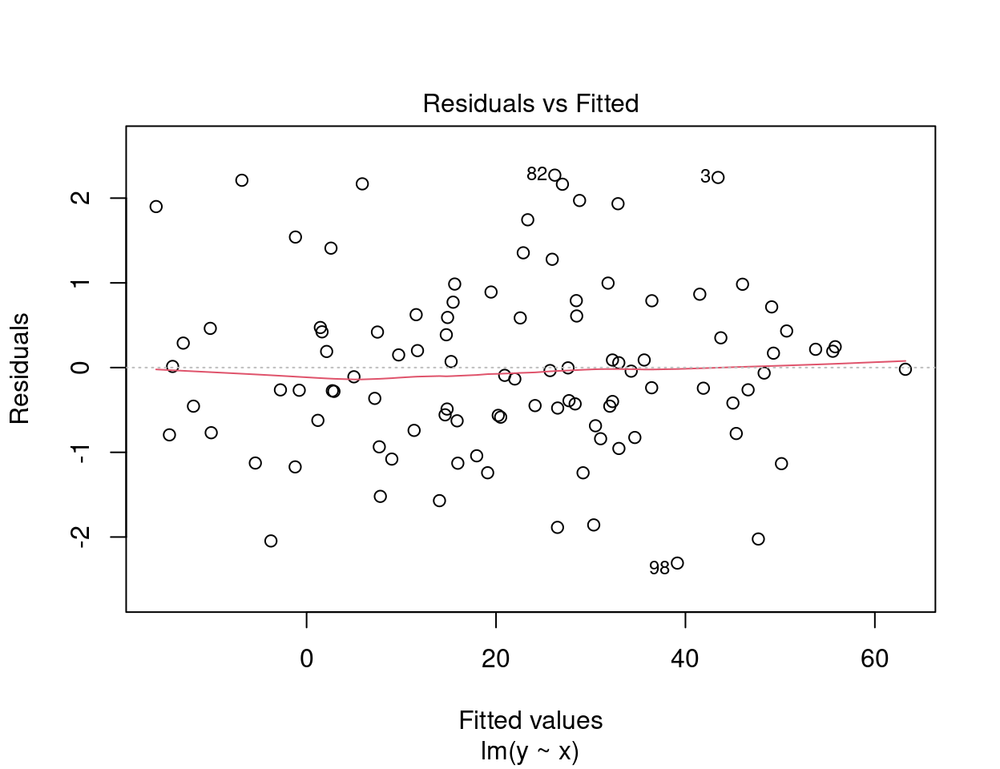
On the y axis we find the residuals \(\epsilon_i\) and on the x axis the predicted values \(\hat{y_i} = \beta_0 + \beta_1 \times x_i\).
In an ideal situation, there is no pattern to the dispersion of the points.
- If the residuals are scattered randomly around the line of 0, the relationship is linear and the mean of the residuals is 0.
- If the residuals form an approximate horizontal band around the 0 line, the variance of the residuals is homogeneous (i.e. they are homoscedastic).
- If the residuals are organized in a funnel shape, the residuals are not homoscedastic.
Warning! You should be alerted if the distribution of the points is non-linear as in these two examples:
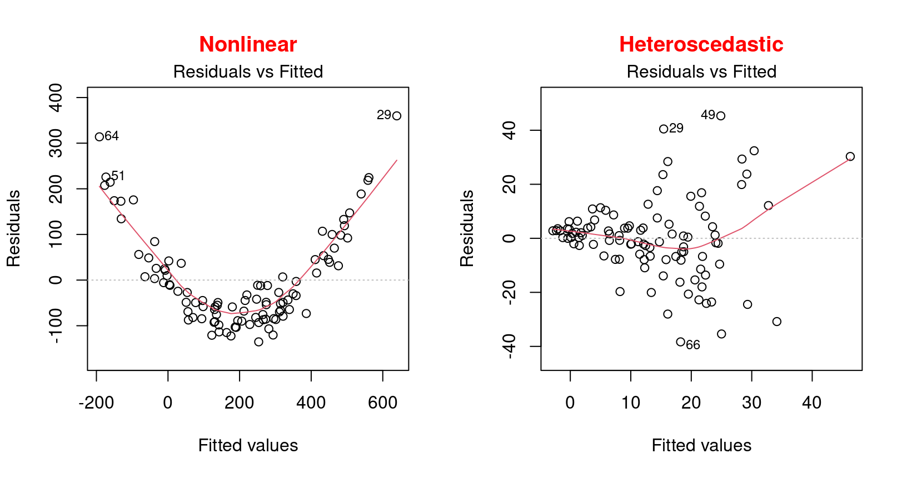
These examples present a non-linear relationship and an example of heteroscedasticity which is the opposite of homoscedasticity, meaning that the normality condition is not met.
In this situation, one should rather use a generalized linear model (GLM) that allows for other distributions (Poisson, binomial, negative binomial, etc.) or try to transform the response variable and/or the predictors.
4.2.2.2 Diagnostic plot # 2 - Scale Location
The second diagnostic graph allows us to check if the dispersion of the residuals is increasing for a given predicted value (i.e. if the dispersion of the residuals is caused by the explanatory variable). If the dispersion increases, the basic condition of homoscedasticity is not respected.
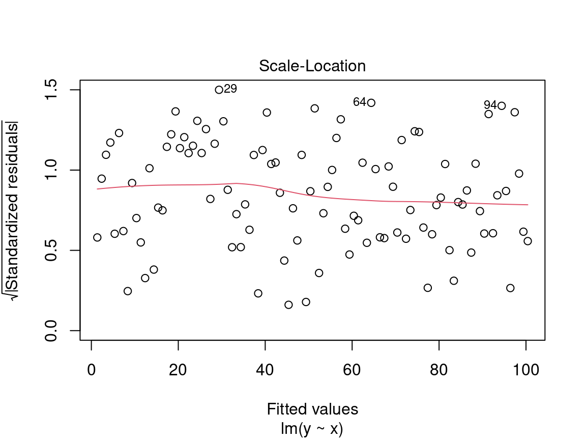
On the y axis we find the square root of the standardized residuals \(\sqrt{\frac{\epsilon_i}{\sigma}}\) and on the x axis the predicted values \(\hat{y_i} = \beta_0 + \beta_1 \times x_i\).
Here we are also looking for a dispersion of the points without a pattern, thus an evenly distributed predictor.
Caution! Be careful if the distribution of the points shows a marked trend:
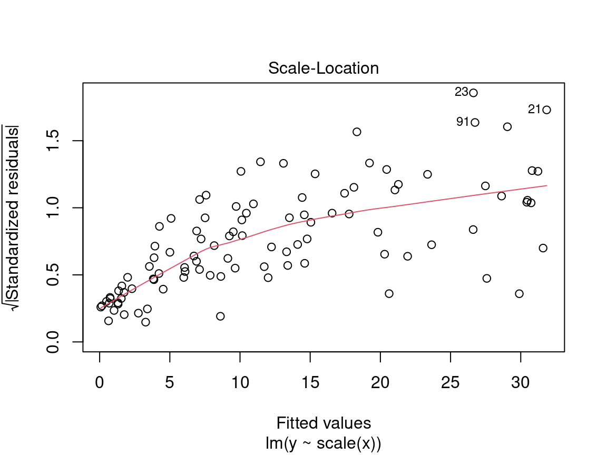
In a situation like this, we cannot rely on model results and should instead try to use a generalized linear model (GLM) that allows for other distributions (Poisson, binomial, negative binomial, etc.) or transform the response variable and/or the predictors.
4.2.2.3 Diagnostic plot # 3 - Normal QQ
The third plot shows the distribution of the residuals. With this quantile-quantile plot, we can evaluate the normality of the residuals. This plot compares the probability distribution of the residuals of the model to a probability distribution of normal data.
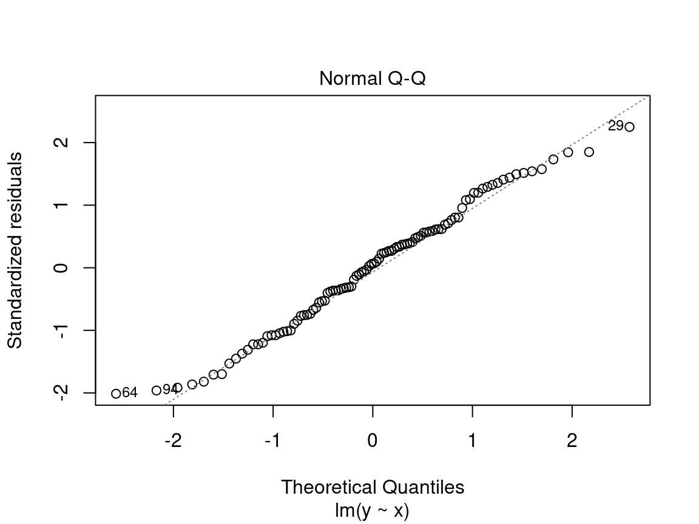
On the y axis we find the standardized residuals \(\frac{epsilon_i}{\sigma}\) and on the x axis the quantiles of a standard normal distribution \(\mathcal{N}(0, \sigma^2)\).
We want to see the standardized residuals are near the 1:1 line. Thus, the residuals can be considered normally distributed.
Caution! Be suspicious if the distribution of the points does not follow the 1:1 line:
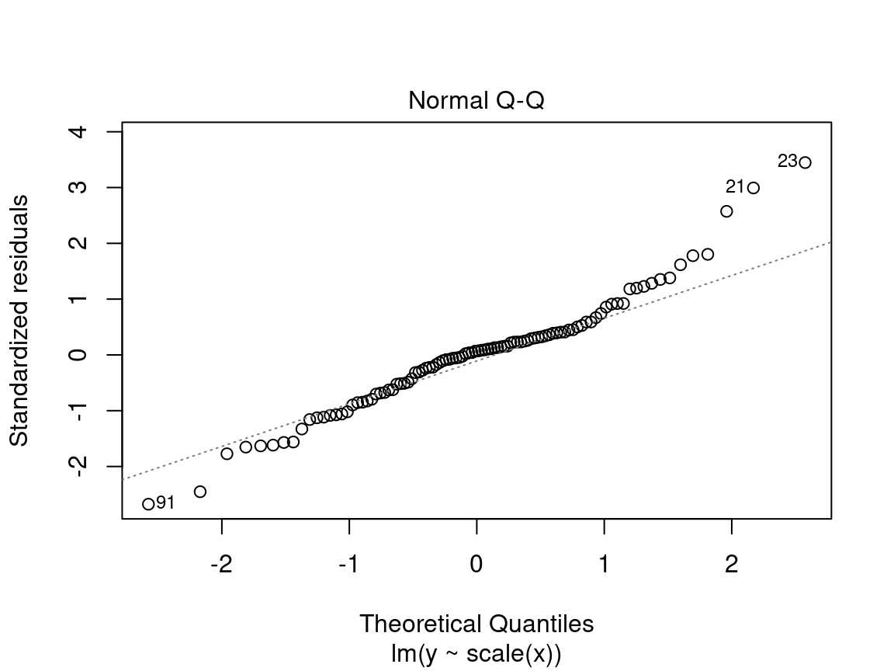
In this case, the points are not well aligned on the line, suggesting that the residuals are not normally distributed. Instead, try using a generalized linear model (GLM) that allows for other distributions (Poisson, binomial, negative binomial, etc.) or transform the response variable and/or the predictors.
4.2.2.4 Diagnostic plot # 4 - Residuals vs Leverage
This last diagnostic plot shows the residuals and their influence. It allows us to determine if certain observations have a strong influence. Although we are not testing for a baseline condition, the presence of points with a strong influence can influence our interpretation of the data. If one or more observations are outliers (i.e., if they have very different values from the others), the model may be misfitted because of their exaggerated influence on the model estimate.
The residuals vs. leverage plot shows the leverage points which are extreme observations of the predictor and their influence on the regression. The influence is quantified by the Cook distance. A distance greater than 0.5 is problematic.
Example of leverage and influence.
These are not diagnostic plots, but figures that illustrate the concepts of leverage and influence.
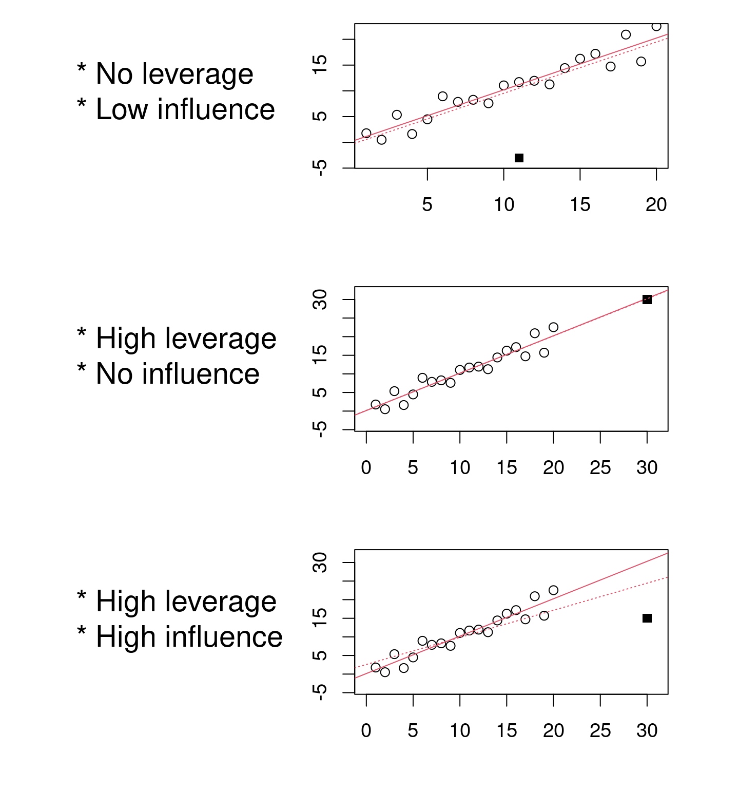
We want to observe residuals that fall within the dotted lines marking the Cook distance of 0.5.
Caution! Beware if a point or points lie outside the dotted line:
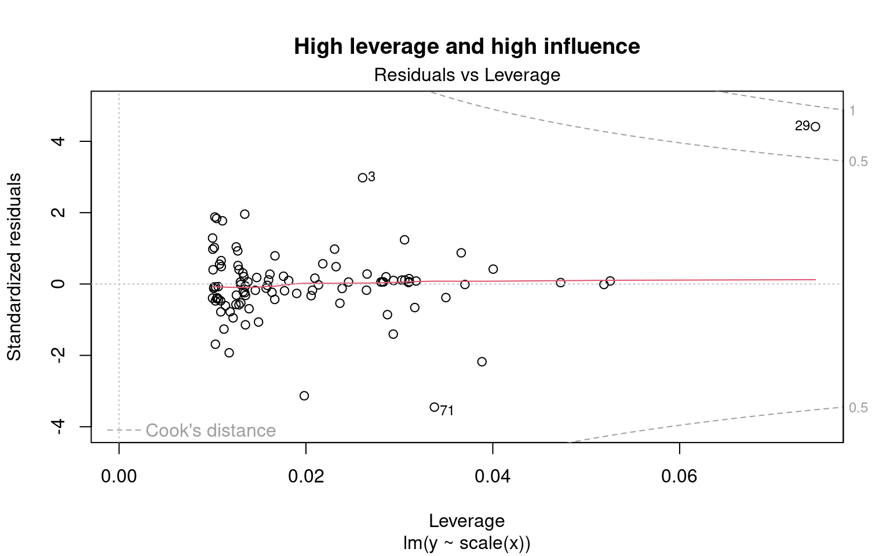
The 29 has leverage and a Cook’s distance of more than 0.5. It corresponds to an outlier. However, outliers should never be removed without good reason to do so! If (and only if!) these observations are measurement errors or exceptions, they can be removed from the data set.
4.2.3 Step 2. Verify assumptions of lm1
Does lm1 violate any assumptions of the linear model?
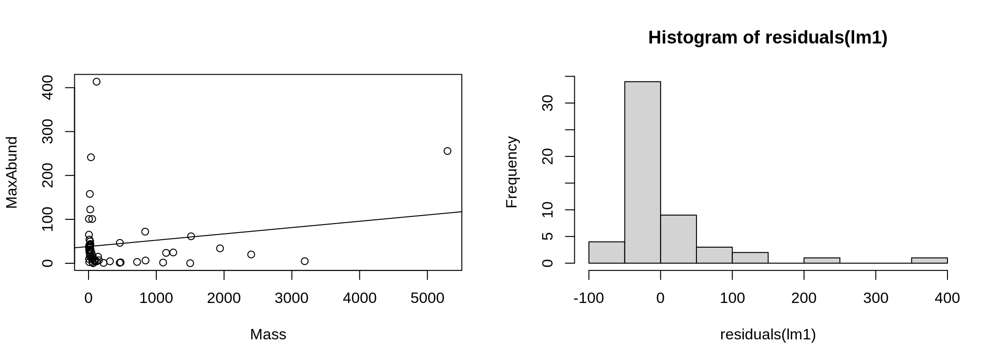
Based on the insights gained in the previous sections, there are serious problems with these diagnostic plots. * Plots 1 and 2 shows strong trends, * Plot 3 shows that the residuals do not follow a normal distribution, * Plot 4 highlights the leverage of point 32 and its very high influence.
4.2.4 Assumptions not met - what is wrong?
To understand the source of the problems with the linear model, let’s plot the model with the observations:
# Plot linear model and observations
par(mfrow = c(1, 2))
coef(lm1) # constant and slope## (Intercept) Mass
## 38.16645523 0.01438562plot(MaxAbund ~ Mass, data = bird) # left plot
abline(lm1) # line defined by the model parameters
hist(residuals(lm1)) # plot on the right : distribution of residuals
On the left we have the data as well as the line representing the model estimation (MaxAbund ~ Mass). On the left, the distribution of the residuals.
We can check if the residuals follow a normal distribution using a Shapiro-Wilk test and a skewness test (skewness):
# Test the normality of residuals
shapiro.test(residuals(lm1))##
## Shapiro-Wilk normality test
##
## data: residuals(lm1)
## W = 0.64158, p-value = 3.172e-10# Skewness test
library(e1071)
skewness(residuals(lm1))## [1] 3.154719The Shapiro-Wilk test compares the distribution of the observed data to a normal distribution. The observed data can be considered normally distributed when the p-value calculated by the Shapiro-Wilk test is greater than the α significance level (usually 0.05). Here, the p-value (p-value) returned indicates a distribution that is significantly different from normal.
The skewness test measures the shift of the residuals. A positive value represents a leftward shift and a negative value a rightward shift. Here, the positive skewness value indicates that the distribution is left-shifted.
4.2.5 Assumptions not met - how to proceed?
Clearly, the assumptions of the linear model lm1 are violated. Therefore, we cannot rely on the results of the model. We must turn to another alternative and there are two options when the assumptions of the linear model are violated.
**Use a different type of model
QCBS R Workshops 6-8 explore other models that may be a better fit for the hypothesis and data.
Transform the data
It is also possible to modify one’s data, whether it be the response variable or the predictors. Several types of transformations are possible and their usefulness depends on the distribution of the variable and the type of model. However, modifying variables is often tricky in practice. The transformation may solve some problems, but may create other.
Note that results of statistical tests on transformed data do not automatically hold for the untransformed data.
4.2.5.1 Challenge 1: A model on transformed variables
Our model has some serious problems. Let’s try a logarithmic transformation to see if it can correct the situation.
First, transform the data and run a new linear regression on it. Then, verify the assumptions of model using diagnostic plots.
Step 1
Let’s start by transforming the data in our dataset:
# log-transform the variables
bird$logMaxAbund <- log10(bird$MaxAbund)
bird$logMass <- log10(bird$Mass)With these logMaxAbund and logMass data transformed, we run a new linear regression and save the model object as lm2.
# Linear model with transformed data
lm2 <- lm(logMaxAbund ~ logMass, data = bird)We can observe that the parameters align with our prediction. That is, the logMass coefficient is negative and therefore the abundance decreases with the mass of the species. However, we still need to check the assumptions of the model to ensure the validity of the results.
Step 2
Let’s check the assumptions for lm2 using the diagnostic plots.
# Diagnostic plots
par(mfrow = c(2, 2), mar = c(3, 4, 1.15, 1.2))
plot(lm2)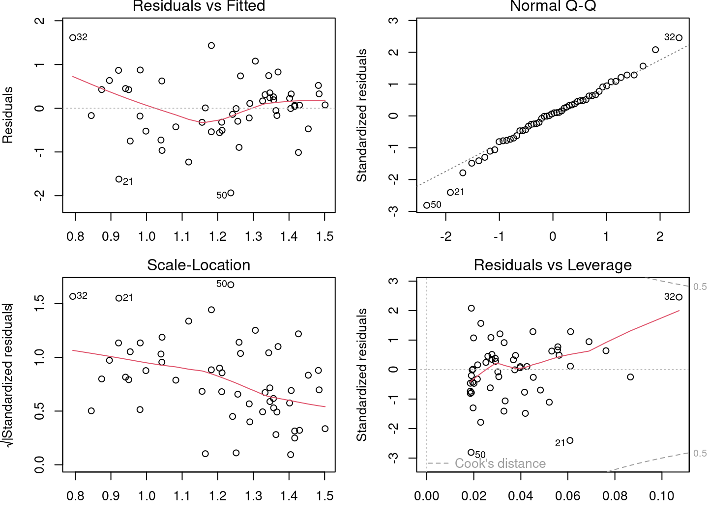
The diagnostic plots look much better, but there are still problems. Some plots still show strong trends. Let’s plot the model with the observations:
# Plot linear model and observations
par(mfrow = c(1, 2))
coef(lm2)## (Intercept) logMass
## 1.6723673 -0.2361498plot(logMaxAbund ~ logMass, data = bird)
abline(lm2)
hist(residuals(lm2))
The model appears to explain the data better and the distribution of residuals has moved much closer to the normal distribution.
4.2.6 Step 3. Analyze parameter estimates
The last step in a linear regression with R is to check the model parameters. We then use the summary() command to get more information about the fitted model.
# Print fitted model parameters
summary(lm2)
Call:
lm(formula = logMaxAbund ~ logMass, data = bird)
Residuals:
Min 1Q Median 3Q Max
-1.93562 -0.39982 0.05487 0.40625 1.61469
Coefficients:
Estimate Std. Error t value Pr(>|t|)
(Intercept) 1.6724 0.2472 6.767 1.17e-08 ***
logMass -0.2361 0.1170 -2.019 0.0487 *
---
Signif. codes: 0 '***' 0.001 '**' 0.01 '*' 0.05 '.' 0.1 ' ' 1
Residual standard error: 0.6959 on 52 degrees of freedom
Multiple R-squared: 0.07267, Adjusted R-squared: 0.05484
F-statistic: 4.075 on 1 and 52 DF, p-value: 0.04869The output of summary() contains several values:
1. Coefficients: Estimates of the parameters and their standard deviation
2. Pr(>|t|): Results of a t-test to determine if the parameters are different from 0
3. Adjusted R squared: How well does the model explain the data?
4. F-statistic(ANOVA): Is the model significantly different from a model with no predictor (null model)?
We will discuss T-tests and ANOVA in the next section. However, we can already see that our model is only marginally better than the null model.
With the lm2 object, we can also extract the parameters of the model and the other results:
# Vectors of residuals and predicted values
e <- residuals(lm2)
y <- fitted(lm2)
coefficients(lm2) # coefficients## (Intercept) logMass
## 1.6723673 -0.2361498summary(lm2)$coefficients # coefficients and T-tests## Estimate Std. Error t value Pr(>|t|)
## (Intercept) 1.6723673 0.2471519 6.766557 1.166186e-08
## logMass -0.2361498 0.1169836 -2.018658 4.869342e-02summary(lm2)$adj.r.squared # adjusted R squared## [1] 0.054836964.3 Model interpretation
Model interpretation is the final step when we obtain a model that meets the assumptions. Interpretation is the evaluation of the model’s support for the hypothesis. In short, we answer the question: To what extent does the model support our hypothesis?
Hypothesis
For different bird species, the average mass of an individual affects the maximum abundance of the species, due to ecological constraints (food sources, habitat availability, etc.).
# Summary of the linear model with log-transformed data
summary(lm2)
Call:
lm(formula = logMaxAbund ~ logMass, data = bird)
Residuals:
Min 1Q Median 3Q Max
-1.93562 -0.39982 0.05487 0.40625 1.61469
Coefficients:
Estimate Std. Error t value Pr(>|t|)
(Intercept) 1.6724 0.2472 6.767 1.17e-08 ***
logMass -0.2361 0.1170 -2.019 0.0487 *
---
Signif. codes: 0 '***' 0.001 '**' 0.01 '*' 0.05 '.' 0.1 ' ' 1
Residual standard error: 0.6959 on 52 degrees of freedom
Multiple R-squared: 0.07267, Adjusted R-squared: 0.05484
F-statistic: 4.075 on 1 and 52 DF, p-value: 0.04869The lm2 model has very little evidence to support the hypothesis. Looking at the parameters of the model as discussed above, we observe that the model explains little of the response.
The low Adjusted R squared indicates that little of the variance in the response variable is explained by the model. Mass explains only a small fraction of the species abundance.
The F-test is barely significant indicating that the model is only slightly better than a model without predictor variables.
Finally, the estimated effect size (the coefficient) of the parameter logMass is very close to zero and is only marginally significant, i.e. an increase or decrease in species mass causes almost no change in their abundance.
The results are not as good as we would like, perhaps we should formulate a more precise hypothesis?
4.3.1 Finding a better model: terrestrial birds
Let us formulate a new and more precise hypothesis. This time let’s focus only on land birds. Waterfowl abundance may not respond to mass in the same way as land birds.
New hypothesis
For different bird species terrestrial, the average mass of an individual has an effect on the maximum abundance of the species, due to ecological constraints (food sources, habitat availability, etc.).
We can now fit the linear model to exclude waterfowl:
# Linear model with terrestrial birds
lm3 <- lm(logMaxAbund ~ logMass, data = bird, subset = !bird$Aquatic)
# excludes waterfowls (!birdsAquatic == TRUE) or in an
# equivalent way: lm3 <- lm(logMaxAbund~logMass, data=bird,
# subset=bird$Aquatic == 0)
# Model output
lm3##
## Call:
## lm(formula = logMaxAbund ~ logMass, data = bird, subset = !bird$Aquatic)
##
## Coefficients:
## (Intercept) logMass
## 2.2701 -0.6429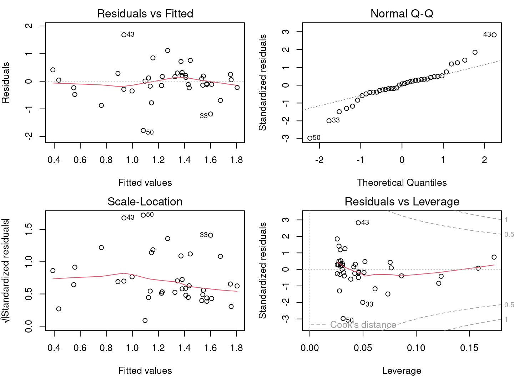
From the diagnostic plots, we can conclude that the application conditions are met!
Finally, the model provides evidence to support our hypothesis:
summary(lm3)
Call:
lm(formula = logMaxAbund ~ logMass, data = bird, subset = !bird$Aquatic)
Residuals:
Min 1Q Median 3Q Max
-1.78289 -0.23135 0.04031 0.22932 1.68109
Coefficients:
Estimate Std. Error t value Pr(>|t|)
(Intercept) 2.2701 0.2931 7.744 2.96e-09 ***
logMass -0.6429 0.1746 -3.683 0.000733 ***
---
Signif. codes: 0 '***' 0.001 '**' 0.01 '*' 0.05 '.' 0.1 ' ' 1
Residual standard error: 0.6094 on 37 degrees of freedom
Multiple R-squared: 0.2682, Adjusted R-squared: 0.2485
F-statistic: 13.56 on 1 and 37 DF, p-value: 0.000733The Adjusted R-squared is 0.25, indicating that the model is a reasonably good fit to the data. The model is much better than a model without predictor variables. The F-test is significant (< 0.05). The T-test shows that the estimate of the parameter “logMass” is clearly different from 0 and that mass has an effect on species abundance.
4.4 Challenge 2
For the second challenge, let’s put all the steps together and try with new data:
- Formulate another similar hypothesis about the maximum abundance and average mass of an individual, this time for passerine birds.
- Fit a model to evaluate this hypothesis, using the transformed variables (i.e.
logMaxAbundandlogMass). Save the model aslm4. - Verify assumptions of the linear model using the diagnostic plots.
- Interpret the results: Does the model provide evidence to support the hypothesis?
Hint: Like aquatic species, passerines (variable
Passerine) are coded 0/1 (check withstr(bird))
4.4.1 Solutions
Hypothesis
For different species of passers, the average mass of an individual affects the maximum abundance of the species, due to ecological constraints (food sources, habitat availability, etc.).
Fitting the model
# Fitting a linear model on passerine birds
lm4 <- lm(logMaxAbund ~ logMass, data = bird, subset = bird$Passerine ==
1)
lm4##
## Call:
## lm(formula = logMaxAbund ~ logMass, data = bird, subset = bird$Passerine ==
## 1)
##
## Coefficients:
## (Intercept) logMass
## 1.2429 0.2107Verify assumptions of the linear model
par(mfrow = c(2, 2))
plot(lm4)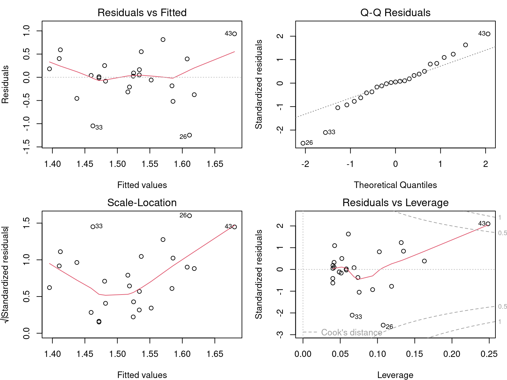
Is it worth interpreting the results?
summary(lm4)
Call:
lm(formula = logMaxAbund ~ logMass, data = bird, subset = bird$Passerine ==
1)
Residuals:
Min 1Q Median 3Q Max
-1.24644 -0.20937 0.02494 0.25192 0.93624
Coefficients:
Estimate Std. Error t value Pr(>|t|)
(Intercept) 1.2429 0.4163 2.985 0.00661 **
logMass 0.2107 0.3076 0.685 0.50010
---
Signif. codes: 0 '***' 0.001 '**' 0.01 '*' 0.05 '.' 0.1 ' ' 1
Residual standard error: 0.5151 on 23 degrees of freedom
Multiple R-squared: 0.02, Adjusted R-squared: -0.02261
F-statistic: 0.4694 on 1 and 23 DF, p-value: 0.5001The results of the model should not be interpreted, because the assumptions of the linear model are not met!
4.5 Linear regression in R
Performing a linear regression with R is divided into three steps:
- Formulate and run a linear model based on a hypothesis
- Check the assumptions for the linear model
- Examine the output of the model and whether the conditions are met
- Analyze the regression parameters
- Plot the model
- Perform significance tests on the parameter estimates (if necessary)
We will explore each step in the following sections.
Also, in the case where the assumptions are not met, we will see that it is possible to consider the use of a Generalized Linear Model (GLM) or data transformation.
4.6 Variable names
Different terms are used for the response and the predictor, depending on the context and the scientific field. The terms are not always synonymous. Here are two tables to help you understand the jargon you will encounter.
| response | predictor |
|---|---|
| explanatory var. | |
| covariate | |
| outcome | |
| output var. | input var. |
| dependent var. | independent var. |